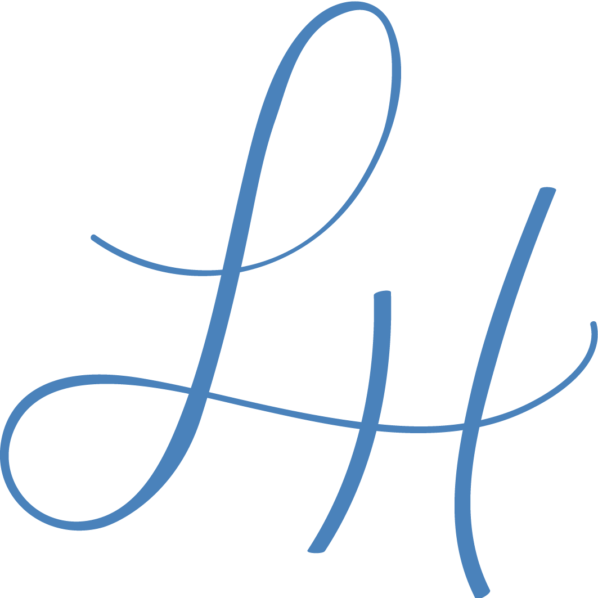

Client Ask
The Community Engagement team asked us to help them create a project that would enable academics and community members come together to partner in research.
Health research has long been considered solely an academic pursuit, and it’s extremely common for researchers to conduct their experiments without the contributions and feedback of the greater communities they study. This makes for both bad relationships and bad science.
Thankfully, a new research approach is starting to gain traction. Community-engaged research (CEnR) is a philosophy and set of research methods that aim to bring community partners into the research process, at any point from study design and implementation to analysis and dissemination. We set out to enable these connections for communities all across the state through our online platform Michigan Research Engaging the Academy and Community in Health (M-REACH).
Questions
When we embarked on this project, there were no existing products in this space, and we as designers were unfamiliar with the users. This left us with many questions such as:
- How do values, perspectives, and needs differ between our key users?
In many ways this platform is a double-sided marketplace, with academics on one side and community members on another. We didn't know much about either group when we first started, so we knew we had to begin our process with deep user research to uncover these groups' true wants and needs. - What current barriers exist to partnership?
In the world of Community Engaged Research, each partnership is hard-fought. We needed to learn what kept more people from forming partnerships in order to identify the opportunities for our product to help the process along. - Where can a technology solution make the most impact in this space?
Community engagement is largely an in-person, people-focused endeavor. Many community members do not rely as heavily on technologies, especially for making connections, so we knew it would take a lot of experimentation to see where a tech solution would be both useful and appropriate. - How do we bring engage users at every step along the way?
We highly prioritize involving our users at every stage of the design process, but this user group in particular was hard to mobilize. Academics are extremely busy and community members are distrustful of medical institutions, so the challenge to get user feedback was a logistical one as well as a relational one. - How do we make sure voices are represented equitably?
There is a long and gruesome history of medical researchers taking advantage of people of color, and this legacy still affects the power dynamics in play today. We knew our solution would not be of good or right unless we fully acknowledged and accounted for these disparities.
Approach and Process
Our highest priority was to keep users at the center of whatever solution we built, designing what they need instead of what we want.
This meant beginning the process with user research, inviting users to give feedback after every round of design, and using both qualitative and quantitative user data to measure success and determine our next directions.
Our design process unfolded through six phases, as seen in the diagram below.

In-Depth Case Study
See my full project case study for a deeper dive into each part of the process.
Challenges and Solutions
Each phase of the design process came with its own unique set of challenges and we had to be humble, flexible, and scrappy to find solutions to overcome them.
Phase 1: Strategize
Challenge: How can we consider both academics and community voices in an equitable way?
When we worked with our clients to get more specific on who exactly the users were, we realized the power dynamic between the groups was more complicated than we imagined.
To figure out how to do right by both sides we engaged in a lot of background research around discrimination in healthcare and health research, working closely with the Community Engagement team to identify best practices on how to involve people from the community in a way that was dignifying and empowering.
Phase 2: Discover
Challenge: How do we meaningfully learn what these very different groups of users actually want and need?
Choosing the right design methods to learn what users actually want is the crux of every design project since it creates the foundation to build on top of for the rest of the process.
To tackle this challenge for our very different sets of users, we incorporated the standard empathy interviews but also went a step further. We looked outside the standard UX research toolkit and explored participatory design methods, culminating in a co-creation session with 70 users. This helped us understand our users beyond what they say or what they do, getting deeper into their wants by looking at what they make.
Challenge: How can we create a reliable pipeline for user testing participants?
Recruiting real users for feedback is usually not an easy task, and we knew that it may be harder than usual for us to get access to our users since academics are extremely busy and community members are hesitant to participate in hospital-related projects.
In order to build our pipeline of participants, we knew we had to start early. In the first set of meetings where we identified our key users, we immediately reached out to partners to help us make connections with them.
We also took advantage of existing user events, such as the Community Engagement annual retreat, to tell people about our project and get their buy-in so they would be more willing to get involved.
Phases 3-5: Prototype
Challenge: How do we test the boundaries of the design?
In the rapid prototyping cycle, each iteration aims to get you a bit more confidence to what the right design should be. In order to gain certainty, we need to figure out how to test the boundaries to know in what direction to move forward.
For each set of designs, we face this challenge by experimenting with a variety of possibilities for each feature and particularly try to feel out the edges. Instead of showing one option to users and see if they like it, we always make sure to present multiple options across the spectrum for each idea to make sure people have enough exposure to different options so we get richer feedback.
Challenge: How do you utilize tech meaningfully, and not just for tech sake?
It's easy for product designers to want to design digital solutions for everything. After all, when you're a hammer, everything looks like a nail. But this Community-Engaged Research space is one that heavily emphasizes human interaction and connection, and we needed to introduce tech in a thoughtful way.
To address this challenge, we worked with the Community Engagement team to develop a service design model that would work in tandem with the website. By incorporating in-person human elements to the overall service blueprint, we made the product more robust and turned it into a more holistic service experience.
Challenge: How do you know when it's good enough?
The hardest thing about iterative design is knowing when to stop. When do you have enough confidence from user testing to know you should ship the feature?
Tackling this challenge is part of the wonderful messiness that is design. It's tempting to user-test ideas to death to make sure they're exactly right, but the truth is that showing users in controlled environment like a feedback session has its limits. Once a feature has just enough consensus, the most useful feedback is seeing how users actually engage with the product in the real world. We strive to ship fast and be nimble enough to course-correct when needed.
Phase 6: Launch
Challenge: How do we entice people to check out the product?
Ah, the age-old problem of awareness and engagement. It's not true that "if you build it they will come." Without a team budget for marketing or advertising, the challenge the team currently faces is sharing the product with people who need it.
In a world where trust and networks really matter, we have relied mostly on partnerships we have formed in both the academic and community engagement worlds to spread the word. In this phase, we plan to undergo a variety of initiatives such as creating an in-house product video to show off M-REACH's value, plugging into university communication streams, and going on (virtual) roadshows to show off the product.
Lessons
We walked away from this project with a ton of lessons about community engagement space, as well as a wealth of learnings about the design process in general.
Quick Takeaways
- Include users early. Create a pipeline for getting user feedback.
- Consider societal power differentials when designing for different groups of users. Aim for equity, not equality.
- Engage users in a variety of ways to get richer feedback. Especially on the front-end of design, look for participatory methods that incorporate not just what someone says or does but also what they make.
- Test the boundaries of an idea space. Don't just test the most obvious option.
- Acknowledge the limits of tech. Sometimes a tech feature can complement a person-to-person interaction instead of replacing it.
Long-Form Reflections
Throughout the process, I took stock of the more hefty lessons I learned and turned them into long-form essays, published on Medium as part of the UX Collective publication:
It's
not an interview, it's a listening session
I took a deep dive into user interviews for this project. This essay takes a look at the user
discovery interview, revealing the nuances of how it differs from a journalism-style interview.
The
thoughtful doodle
This was the first time I played with quick doodles to share user research insights. In this essay I make
a case for using using visuals, even really simple ones, to communicate ideas much more richly than through
words alone.
Considering user context at
every step
We ran into many bumps as we designed our 70-person user co-creation session, and in this essay I explore
the role of context in design and how we should have been more mindful of this key principle in designing our
session.
When
polish gets in the way
In this essay I look at the idea of doing just enough design, writing about how and why I chose to use
paper to prototype a digital chatbot instead of going with the much easier option of a simulator or SMS
messages.
Thanks for reading! :)
